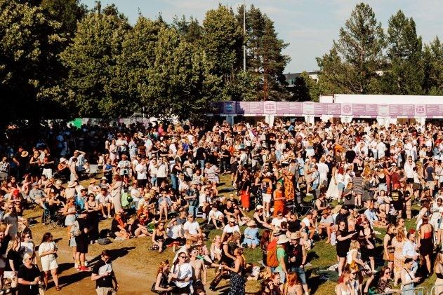

Festivals · Music
Ilosaarirock 2027
- Dates
- –
- Venue
- Laulurinne, Joensuu
- Location
- Joensuu, Finland
- Format
- In-person
- Category
- Music
- Industry
- Music
- Organiser
- Ilosaarirock
- Official website
- https://ilosaarirock.fi/en/
About
Dates are local civil dates in Finland (Europe/Helsinki).
Topics: music festival, rock, pop.
No organiser attendance figure found on the official pages fetched 24 Nov 2026. Ranked by our estimated size tier 'large' (30,000-100,000 attendees/visits), a judgement from format, venue and scale, not an official number.